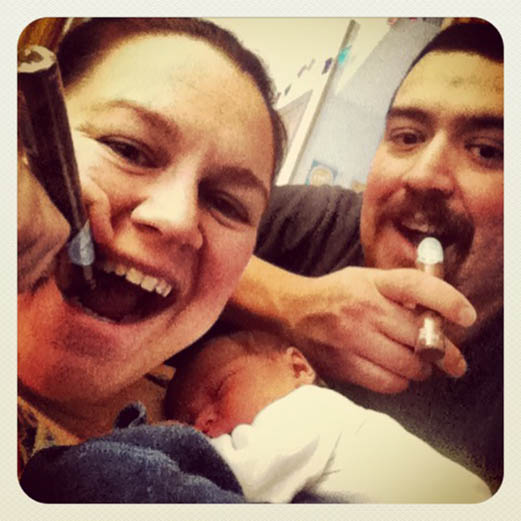

Ram Fam Pottery is a Ramirez family affair that includes Carlos the Moonshine Potter, Lissa the Slinger and baby Dewdropper Cosmo. We are a couple of high school sweethearts that went their separate ways only to find each other again 8 years later on a street in Pasadena. Joining forces again and now married with a new little one in the house as of Jan 31, 2013, we wanted to find a way to be creative together.
After receiving a positive response from the jugs, we decided to try a crack at making a couple of extra chips from a labor of love together. Each jug is handmade and unique. Everything including the clay and glaze is made in house and all is food safe.
The ethos behind these wares is the simple act of making and the enjoyment of time spent with family and friends over a few swigs of fine spirits. We hope you enjoy these hooch jugs, from our hands to yours.